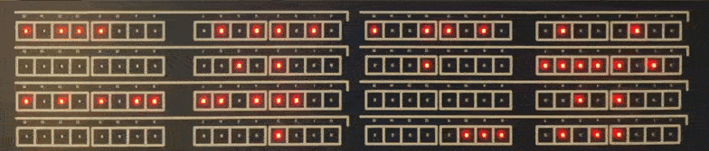

I loaded the MM Edit program onto my new Linux/Kubuntu desktop and wanted to test it out with a Raspberry Pi Pico development board to ensure everything was working. As my Pico board was all the way over in my workshop, and it was raining and cold outside (yeah, middle of summer here – go figure!), I pulled the spare RP2040 blinkenlight board off my spares shelf and decided to have another go at the temporary C firmware on it, maybe fix it once and for all.

The original blinkenlight board was a surprise favourite with the Hacker News and HackaDay community last year, and judging from the correspondence I had, a lot of people appreciated the RP2040 version over the original 8-Bit PIC one. Obviously, as I was testing MM Edit, not VS Code, I replaced the C program with a small MMBASIC program, just to see how easy it was to to do, if it all worked, and, if BASIC was fast enough to drive a bunch of multiplexed LED’s with row and column drivers. I am pleased to say it did, and the results surprised me, this must have also been the fastest development I have ever done, maybe 3 hours start to finish! It was as simple as clicking the boot-select switch on my board, plugging it in to a free USB port, and dropping the PicoMite RP2040 6.01 firmware on the new USB drive. Then writing the super-simple program below in MM Edit, pressing reset on the blinkenlight board clicking the MM Edit upload button and presto!
I wont even bother to explain the code you don’t get much easier than this. I guess I should start testing my C compilers now, wont be as much fun 🙁
' Firmware for the Blinkenlights board (https://rodyne.com/?p=1751)
' Note we are ignoring the 4-switch inputs as not required in USB version
' Use OPTION HEARTBEAT OFF to free up the heartbeat LED which I have used
OPTION EXPLICIT ' must declare variables and defaults
OPTION DEFAULT NONE '
ON ERROR IGNORE ' lazy error handling for non-critical hardware
' set RP2040 pin assignments
SETPIN gp3, dout
SETpin GP4, dout
SETpin GP5, dout
SETpin GP9, dout
SETpin GP10, dout
SETpin GP11, dout
SETpin GP12, dout
SETpin GP13, dout
SETpin GP14, dout
SETpin GP15, dout
SETpin GP16, dout
SETpin GP17, dout
SETpin GP18, dout
SETpin GP19, dout
SETpin GP20, dout
SETpin GP21, dout
SETpin GP22, dout
SETpin GP23, dout
SETpin GP24, dout
SETpin GP25, dout
SETpin GP26, dout
SETpin GP27, dout
SETpin GP28, dout
SETpin GP29, dout
' global variables
dim integer regs(8) ' 8 banks (rows) of 16 leds
DIM integer row = 0 ' which row is selected for output
dim integer OpModeTimeout = 0 ' it needs to accept input from my retro comp
dim string CBuff$="" 'input temporary sorage
dim string Char$
DIM integer trnd, nVal, hVal
' program main loop
DO
if OpModeTimeout=0 then ' no input so do some random light show
trnd = rnd*400 ' adjust this to speed up or slow down light show
if trnd<10 then regs(row)=regs(row)<<1 ' shift bank LEDs left
if trnd=13 then regs(row)=regs(row)>>1 ' and right
if trnd=14 then regs(row)=not regs(row) ' invert them
if trnd=15 then regs(row)=rnd*65000 ' pop a new random pattern in
if trnd>380 then regs(row)=regs(row)+1 ' increment them
else
OpModeTimeout=OpModeTimeout-1 ' if no input for 12s then timeout to rnd light show
endif
' asset the scan row driver (1=ROW ON)
pin(gp22)=(row=7)
pin(gp23)=(row=6)
pin(gp24)=(row=5)
pin(gp25)=(row=4)
pin(gp26)=(row=3)
pin(gp27)=(row=2)
pin(gp28)=(row=1)
pin(gp29)=(row=0)
' decode and asset the correct column driver for the 16 LED's (0=COL ON)
if regs(row) and &h0001 then PIN(GP3)=0 else pin(gp3)=1
if regs(row) and &h0002 then PIN(GP4)=0 else pin(gp4)=1
if regs(row) and &h0004 then PIN(GP5)=0 else pin(gp5)=1
if regs(row) and &h0008 then PIN(GP9)=0 else pin(gp9)=1
if regs(row) and &h0010 then PIN(GP10)=0 else pin(gp10)=1
if regs(row) and &h0020 then PIN(GP11)=0 else pin(gp11)=1
if regs(row) and &h0040 then PIN(GP12)=0 else pin(gp12)=1
if regs(row) and &h0080 then PIN(GP13)=0 else pin(gp13)=1
if regs(row) and &h0100 then PIN(GP14)=0 else pin(gp14)=1
if regs(row) and &h0200 then PIN(GP15)=0 else pin(gp15)=1
if regs(row) and &h0400 then PIN(GP16)=0 else pin(gp16)=1
if regs(row) and &h0800 then PIN(GP17)=0 else pin(gp17)=1
if regs(row) and &h1000 then PIN(GP18)=0 else pin(gp18)=1
if regs(row) and &h2000 then PIN(GP19)=0 else pin(gp19)=1
if regs(row) and &h4000 then PIN(GP20)=0 else pin(gp20)=1
if regs(row) and &h8000 then PIN(GP21)=0 else pin(gp21)=1
pause 1 ' 1mS
' after pause turn all scan lines off so we dont get ghosting when we change states
pin(gp3)=1
pin(gp4)=1
pin(gp5)=1
pin(gp9)=1
pin(gp10)=1
pin(gp11)=1
pin(gp12)=1
pin(gp13)=1
pin(gp14)=1
pin(gp15)=1
pin(gp16)=1
pin(gp17)=1
pin(gp18)=1
pin(gp19)=1
pin(gp20)=1
pin(gp21)=1
' process banks/rows 0-7 in round-robin
row=row+1
if row>7 then row=0
' The USB port in this firmware acts like a virtual terminal so you can send
' text strings into it as if you are coming from a serial port, just need to
' pretend a serial char is a keypress :-)
' format if r=nnnn where r is the row (0-7), and nnnn is a 16-bit hex string
' eg "4=2FE7<CR>" will put the value 2FE7 into bank 4 of the leds
' if no serial received for more than 12 seconds then revert back to rnd light show
Char$=inkey$
if Char$<>"" then ' check if character received
if Char$=CHR$(10) OR Char$=CHR$(13) then ' if its CR then process buffer
' Note I'm not doing any checks on input using lazy error handling
print "'"+CBuff$+"'" 'for debugging
nVal = Val(LEFT$(CBuff$,1)) ' get the register value 0-7
hVal = val("&H" + mid$(CBuff$,3,4))' convert 4 char hex str to value
regs(nVal)=hVal ' set the register
OpModeTimeout=10000 ' reset the timeout to display it
CBuff$="" ' clear buffer string when processed
else
CBuff$=CBuff$+Char$ ' if not a CR then add char to buffer string
endif
endif
loop
Schematic and Gerbers for the Blinkenlights RP2040 = > here